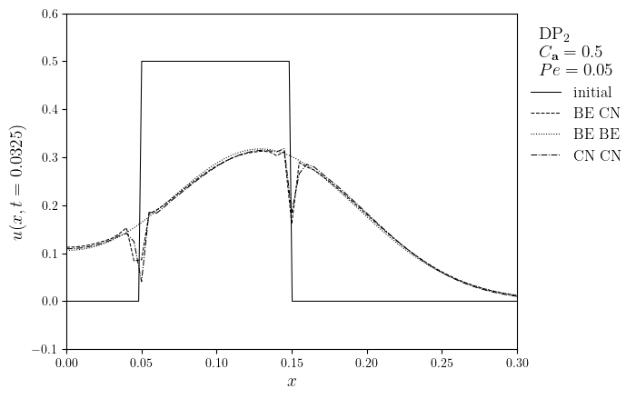
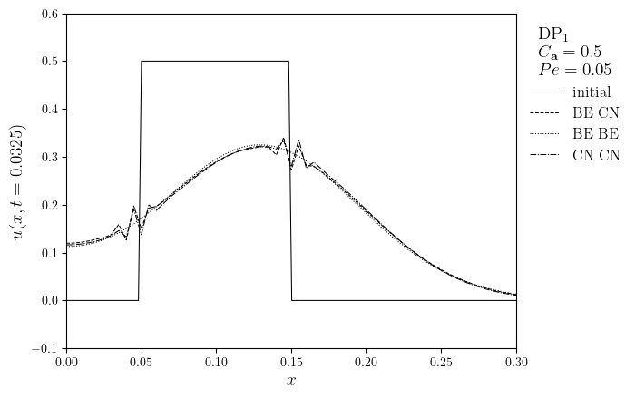
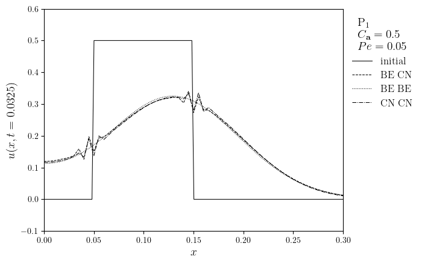

DG advection-diffusion of a tophat on an interval#
\[\begin{split}
\mathbb{S}
\begin{cases}
\Omega = [0, 1] & \text{unit interval} \\
u_0(x) = \mu\text{H}(x - x_0 + \ell/2)\text{H}(x_0 - x + \ell/2) & \text{tophat initial condition} \\
u_{\text{D}}(x=0,1)=0 & \text{Dirichlet boundary conditions} \\
\textbf{a}=a\,\textbf{e}_x & \text{constant velocity} \\
\mathsf{D}=D\mathsf{I} & \text{constant isotropic diffusivity} \\
R=0 & \text{zero reaction} \\
J=0 & \text{zero source} \\ \hline
u_{\text{e}}(x, t)= ... & \text{exact solution} \\
Pe = \frac{a}{2DN_x} & \text{local Peclet number}
\end{cases}
\end{split}\]
import numpy as np
from lucifex.mesh import interval_mesh
from lucifex.fem import Constant
from lucifex.fdm import (
CN, BE, advective_timestep, FiniteDifference, FunctionSeries, ConstantSeries,
finite_difference_order, peclet_argument,
)
from lucifex.solver import ibvp , BoundaryConditions
from lucifex.sim import Simulation, run
from lucifex.viz import plot_line, save_figure
from lucifex.utils import as_index, nested_dict, is_continuous_lagrange
from lucifex.pde.advection_diffusion import advection_diffusion, dg_advection_diffusion
def tophat(x, mu, x0, l):
return mu * (x <= x0 + 0.5 * l) * (x >= x0 - 0.5 *l )
def create_simulation(
element: tuple[str, int],
Lx: float,
Nx: int,
dt: float,
a: float,
d: float,
D_adv: FiniteDifference,
D_diff: FiniteDifference,
mu: float,
x0: float,
l: float,
alpha: float | tuple[float, float] = 10.0,
) -> Simulation:
order = finite_difference_order(D_adv, D_diff)
mesh = interval_mesh(Lx, Nx)
t = ConstantSeries(mesh, name='t', ics=0.0)
dt = Constant(mesh, dt, name='dt')
a = Constant(mesh, (a, ), name='a')
d = Constant(mesh, d, name='d')
u = FunctionSeries((mesh, *element), name='u', order=order, store=1)
ics = lambda x: tophat(x[0], mu, x0, l)
bcs = BoundaryConditions(
('neumann', lambda x: x[0], 0.0),
('dirichlet', lambda x: x[0] - Lx, 0.0),
)
if is_continuous_lagrange(u.function_space):
u_solver = ibvp(advection_diffusion, ics, bcs)(u, dt, a, d, D_adv, D_diff)
else:
u_solver = ibvp(dg_advection_diffusion, ics)(u, dt, alpha, a, d, D_adv, D_diff, bcs=bcs)
return Simulation([u_solver], t, dt)
Lx = 1.0
Nx = 200
h = Lx / Nx
mu = 0.5
x0 = 0.1 * Lx
l = 0.1 * Lx
alpha = 10.0
a = 1.0
courant = 0.5
dt = advective_timestep(a, h, courant)
Pe = 0.05
d = peclet_argument(Pe, h=h, a=a)
elem_opts = [
('DP', 2),
('DP', 1),
('P', 1),
]
D_adv_diff_opts = [
(BE, CN),
(BE, BE),
(CN, CN),
]
simulations = nested_dict((tuple, tuple, Simulation))
for elem in elem_opts:
for D_adv_diff in D_adv_diff_opts:
D_adv, D_diff = D_adv_diff
simulations[elem][D_adv_diff] = create_simulation(elem, Lx, Nx, dt, a, d, D_adv, D_diff, mu, x0, l, alpha)
n_stop = 130
for elem in elem_opts:
for D_adv_diff in D_adv_diff_opts:
run(simulations[elem][D_adv_diff], n_stop=n_stop)
x = np.linspace(0, Lx, num=500)
t_target = int(0.1 * n_stop) * dt
for elem in elem_opts:
fam, deg = elem
legend_title = f'{fam}$_{deg}$\n $C_{{\\mathbf{{a}}}}={courant}$\n $Pe={Pe:.2f}$'
lines = [(x, tophat(x, mu, x0, l))]
legend_labels = ['initial']
for D_adv_diff in D_adv_diff_opts:
D_adv, D_diff = D_adv_diff
u = simulations[elem][D_adv_diff]['u']
time_index = as_index(u.time_series, t_target, func=lambda x, y: np.isclose(x, y))
lines.append(u.series[time_index])
legend_labels.append(f'{D_adv} {D_diff}')
fig, ax = plot_line(lines, legend_labels, legend_title, x_label='$x$', y_label=f'$u(x,t={t_target})$')
ax.set_xlim(0.0, x0 + 2 * l)
ax.set_ylim(-0.1, mu + 0.1)
save_figure(f'Pe={Pe:.2f}_C={courant}_{fam}{deg}', thumbnail=(elem == ('DP', 1)))(fig)



The Kernel crashed while executing code in the current cell or a previous cell.
Please review the code in the cell(s) to identify a possible cause of the failure.
Click <a href='https://aka.ms/vscodeJupyterKernelCrash'>here</a> for more info.
View Jupyter <a href='command:jupyter.viewOutput'>log</a> for further details.